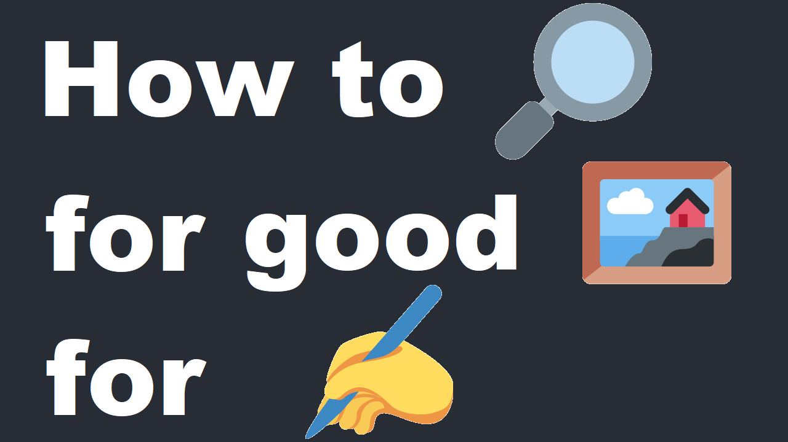
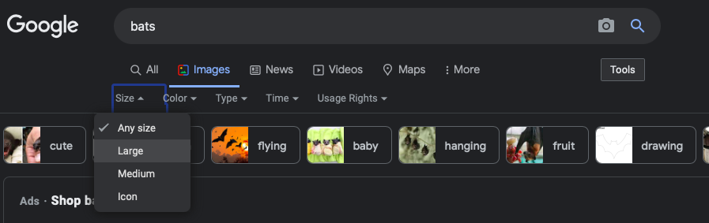

How to find art 🧑🎨 reference

- Goto Google Images and search for images using a high images resolution search (Learned this from Irshad of drawabox.com) I also you recommend learning about doing Google Advanced Searches. For example, if you want to exclude art and YouTube videos from your image search, try "-art -youtube" and it should remove those from the results.

- Search for artist reference on flickr.com for whatever art reference you need
- Got an awesome art reference image, but you need more? reverseimagesearch.org can be the perfect place to find similar images.
- Trying different search engines like Microsoft Bing could be another good place to find art reference
- You can find many free images via gumroad here where you could get many different free packs of images
- You could search Pinterest but pinterest had always been a bit annoying to me
- Proko.com has a good amount of nude model reference for sale
- Got a phone with a camera? Or a camera at all? Then I suggest you go around your house or outside and try to gather reference images yourself
- Have an image but you want more images like the one you have? I suggest using tineye.com to search for similar images. More often then not, you will find the source of where the image you uploaded was posted originally.
- If you look in bookstores or on Amazon.com they sell artist image reference books that are packed with images. That could be a blessing and a curse. Personally I draw using a digital tablet, so having to hold it open does complicate my drawing. So you may have to buy a book holder to keep it opened up. But my mom was a traditional artist and would cut out images from magazines or use printed out pictures to draw from. You gotta find what works for you!
Well I hope those tips help you out. They help satisfy my art reference. Sometimes if you take reference photo's of yourself, it could be helpful for those hard to find poses. Some people draw from wooden mannequins, but those poses appear to always look stiff. Possibly they can help in one way or another.